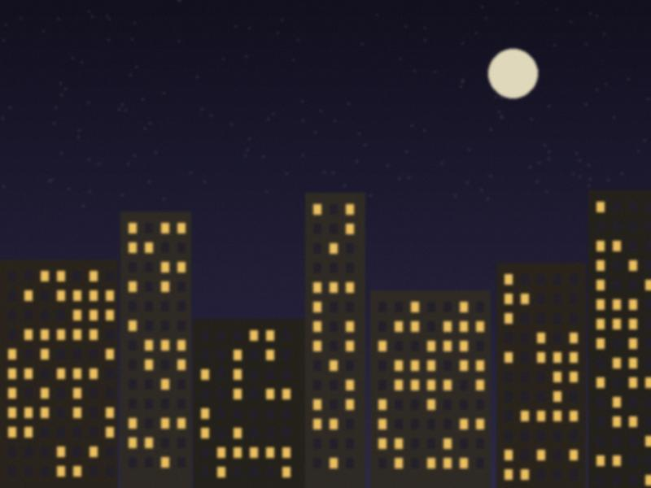
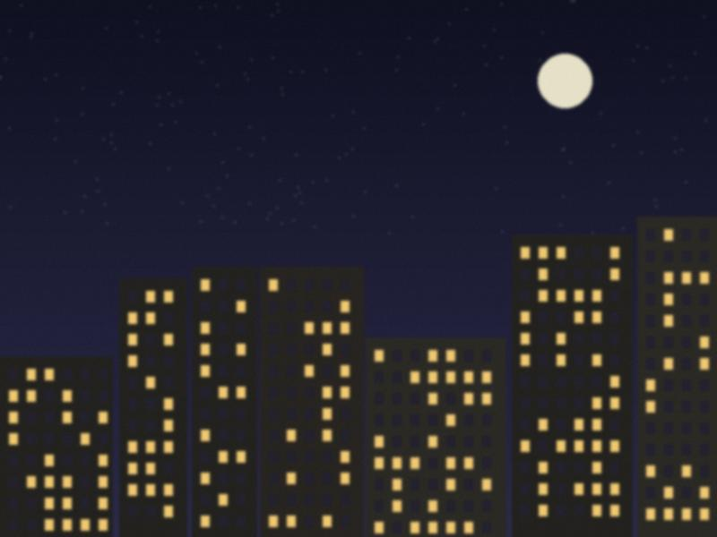

Archive for the ‘words’ Category
i don't post here much any more, it's all on Instagram now and the app is easier. but i like this little pink room on the internet. i will leave it open.
thank you for the notes ♥

last photo from the ninth floor. we moved to a new flat.three days of rain. the whole city is a reflection. i put the camera in a plastic bag and went out and photographed the puddles at night, with the trolleys passing through them like ships.
on the way home an old man asked what i was doing. i said "photographing the water". he looked at the puddle for a while and said "it's good water", and walked on.
this week the wind brought dust from the steppe and all of talas turned the colour of tea with milk. the cars, the tulips, the sheets on the balconies. the sun was a coin behind frosted glass.
i photographed my grandmother's washing line. every sheet was a different shade of beige. "now i have to wash the same laundry twice," she said. "put that in the paper."
my big sister's friend, the one who is a doctor, texted at three in the morning: "come to the kitchen of the department, they have tea". so i went. we sat in the nurses' kitchen with tea and bread and nobody said anything for twenty minutes. then she laughed, for no reason, and so did i.
the sky outside the window was starting to turn. i did not take out the camera.
"some days the mountains are enough." — written on the wall of the bus stop by the bridge. somebody wrote it in black marker in winter and nobody has painted over it.

the new year from the ninth floor. fireworks over the avenue and a cat on the balcony rail looking at them with contempt.things i learned in 2011: how to post from a bus. how to wait for the light. how to say "no" to a seminar on international relations. how not to cry in the corridor of the faculty.
happy new year, whoever you are. the tea is hot.